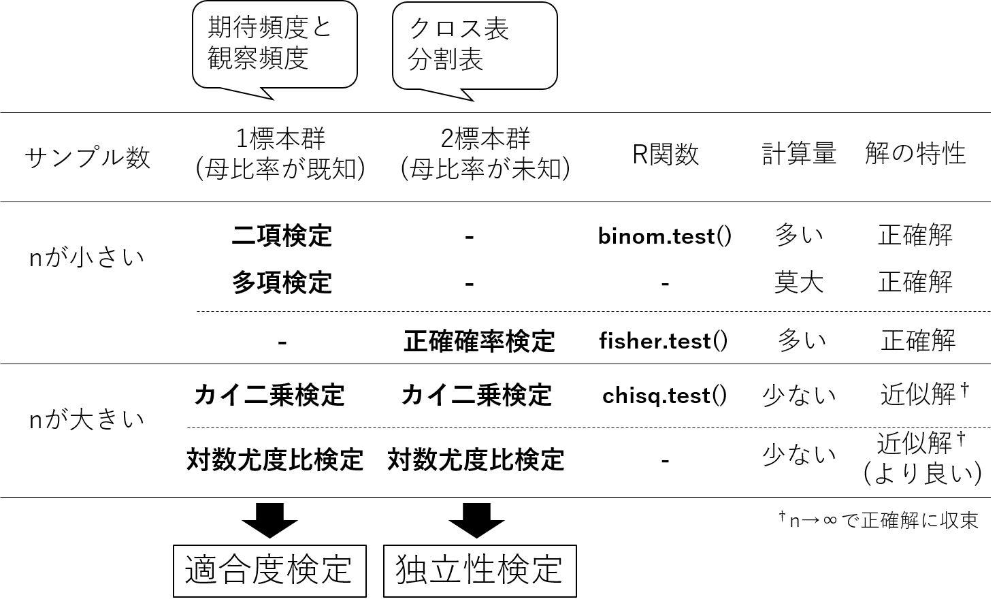
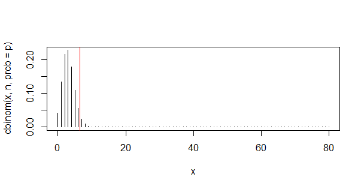

物事はある確率に従って起こる、と考える場合、その仮説通り起きていると思われる時と、仮説通り起きていなさそうな時がある。例えば、あるさいころでは1の目がほとんど出ない場面に遭遇したとき、何かがおかしいと考える。これは、「さいころは1/6の確率で1の目が出る」という仮説を持っているが、これは観察からその仮説が間違っていると思える何らかの指標が得られたからである。この手続きを統計学的に確立した方法が、統計的仮説検定 (Statistical hypothesis testing)(以下、検定)である。
検定は以下の順序でおこなう。 1. 差異は見られない、両者には関係がない、などの保守的な仮説、すなわち帰無仮説(きむかせつ、Null hypothesis) をたてる。\(H_0\)と書く。 2. 帰無仮説に対立する仮説、すなわち 対立仮説 (Alternative hypothesis) をたてる。\(H_1\)と書く。 帰無仮説が 棄却(reject) された場合に 採択(accept) する仮説である。 3. 帰無仮説が正しいと仮定したときに、帰無仮説のもと得られた観察値が観察される確率を計算する。あるいは、\(z\)値、\(t\)値、\(F\)値、\(\chi^2\)値などの 統計検定量を計算し、与えられた自由度の元それらの統計検定量が得られる確率 (\(p\)値)を計算する。 4. \(p\)値と有意水準\(\mathbf{\alpha}\)値を比較し、\(p < \alpha\)のとき、\(H_0\)を棄却し、\(H_1\)を採択する。この状態をしばしば 「有意である(Significant)」と表現する。一方、\(p > \alpha\)の場合は\(H_0\)を棄却できない。帰無仮説が棄却できない時、帰無仮説がただしいというわけではなく、帰無仮説が正しくないとは言えない、というレベルでの確信である。
\(\alpha\)の値は、通常0.05、0.01などが用いられる。\(\alpha =0.05\)とは、100回に5回は偶然\(p < \alpha\)となりうることに注意する。
第三回推定の授業にて説明した区間推定の考え方を少し変えることで、検定を行う。
まず最もシンプルなケースから。
ある業者から購入した培土は、一袋当たり母平均\(\mu=20\)(kg)、母分散\(\sigma=0.21\)にて調整後出荷しているという。最近購入した袋の重さ\(X\) (kg)を8袋計測したところ、その平均値\(\bar{X}=20.4\)であった。正しく出荷されているか、5%水準で検定せよ。ただし、\(X\)の分散は変わらず\(\sigma=0.21\)とする。
\(\bar{X}\)の\(X\)の平均値であり、たとえ\(\bar{X}\)が母平均\(\mu=20\)に基づいていても、\(\bar{X}=20\)とピタリ一致しない。中心極限定理から\(X \sim \mathcal{N}(\mu, \sigma^2)\)のとき、\(\bar{X} \sim \mathcal{N}(\mu, \sigma^2/n)\)である。さらに、標準化スコア \[ z = \frac{\bar{X} - \mu}{\sigma/\sqrt{n}} \] は\(z \sim \mathcal{N}(0, 1^2/n)\)である。標準化スコアの区間推定に持ち込むことで、\(\bar{X}\)の確率を求める。
帰無仮説\(H_0\)は「培土の母平均は20 である」、対立仮説\(H_1\)は「培土の母平均は20 ではない」として検定を行う。題意から標本平均\(\bar{X}\)は20よりも大きくずれる場合と小さくずれる場合の両方が起こりうるので両側検定である。\(n=8\)、\(\sigma=0.21\), \(\bar{x}\)=20.4であるから、標準化スコアの公式より、 \[ z = \frac{\bar{X} - \mu}{\sigma/\sqrt{n}} = \frac{20.4 - 20}{0.21/\sqrt{8}} \fallingdotseq 5.34 \]
である。両側確率で有意水準5%、すなわち\(Z_{\alpha=0.025} >1.96\)かつ\(Z_{\alpha=0.025} < -1.96\)である。よって棄却域は\(|z| > 1.96\)である。得られた\(z=5.34\)は棄却域にあるため、帰無仮説が正しいとき\(\bar{X}\)が得られる確率は5%より低いと考えられる。したがって、帰無仮説\(H_0\)は棄却され、対立仮説\(H_1\)を採択する。この培土は正しく出荷されていない、と考えられる。
同様の場合において、\(X\)の母平均は20よりも大きいといえるか、5%水準で検定せよ。 ####解答例 帰無仮説\(H_0\)は「培土の母平均は20 である」、対立仮説\(H_1\)は「培土の母平均は20よりも大きい」として検定を行う。題意から標本平均\(\bar{X}\)は20よりも大きくずれる場合を考えるので片側検定である。上記と同様\(z=5.34\)である。片側確率で有意水準5%の棄却域は\(Z_{\alpha=0.05}\) >1.32。得られた\(z=5.34\)は棄却域にあるため、帰無仮説が正しいとき\(\bar{X}\)が得られる確率は5%より低いと考えられる。したがって、帰無仮説\(H_0\)は棄却され、対立仮説\(H_1\)を採択する。この培土は20 kgよりも多いといえる。\
5頭の大人の豚(成豚)に対して、これまで使用していた飼料が一時的に利用が困難になったため、代替飼料にて飼育を行うよう変更した。5頭の豚について、飼料変更の前後で体重を測定した。新たな飼料は、従来の飼料とくらべて体重に関して影響を与えない飼料と判断できるか。
| Pig | Weight (kg) | Weight (kg) | Difference |
|---|---|---|---|
| Before | After | ||
| 1 | 115 | 113 | -2 |
| 2 | 120 | 122 | 2 |
| 3 | 117 | 118 | 1 |
| 4 | 123 | 120 | -3 |
| 5 | 125 | 129 | 4 |
同じ個体に何らかの処理をし、処理の前後で観測値の変化を観察することを1標本問題という。その際、処理の前後の変化量\(X\)について検定を行うことが一般的である。観測データから処理前後の個体別のデータが得られているはずなので、\(X\)についての平均と標本不偏分散を計算する。処理に効果がなければ、\(X\)は0に近いはずであるし、意味があれば0からかけ離れたプラスあるいはマイナスの値が得られるはずである。帰無仮説\(H_0\)で\(\bar{X}=0\)を仮定し、その仮定の下、観測データが得られる確率に基づき、統計的判断を行う。ただし、母集団の分散は未知なので、標本不偏分散にて代替した場合、正規分布の代わりに\(t\)分布を用いることは前回述べた。
試料を変更後の体重から変更前の体重を引いた差を観測データ\(X\)とおく。観測データの母平均を\(\mu\)とし、帰無仮説\(H_0\):飼料の変更は成豚の体重に変化を与えない(\(\mu=0\))、対立仮説\(H_1\): 飼料の変更は成豚の体重に変化を与える(\(\mu \neq 0\))として両側検定を行う。\(X = \{-2, 2, 1, -3, -4\}\)の標本平均\(\bar{X}\)は0.4、標本不偏分散\(s^2\)は8.3である。\(H_0\)における\(t\)統計量は \[ t = \frac{\bar{X} - \mu }{s/\sqrt{n}} = \frac{0.4 - 0}{\sqrt{8.3}/\sqrt{5}} = 0.3104602 \] 両側確率で有意水準5%、自由度4のt分布における棄却域を求める。\(t_{\alpha=0.025, t=4} >-2.78\)かつ\(t_{\alpha=0.975, t=4} < 2.78\)である。よって棄却域は\(|t| > 2.78\)である。得られた\(t=0.3104602\)は棄却域に含まれない。したがって、帰無仮説\(H_0\)は5%有意水準で棄却されない。飼料の変更は成豚の体重に変化を与えるとはいえないと考えらえる。\
MATLABを使って演習を行う。
# データをxに代入。
x = [-2, 2, 1, -3, 4]
% 平均
0.4
% 標本不偏分散
var(x)
8.3
% t 統計量を計算
t_value = mean(x) / ( sqrt( var(x) ) / sqrt(5) )
0.3105
% 自由度4のt分布における 有意水準5% / 2 = 2.5%だから、
% t分布における2.5%下側信頼限界は
tinv(0.025, 4)
-2.776445
% t分布における2.5%上側側信頼限界は
tinv(0.975, 4)
2.776445
% ttest()関数で計算 平均=0 を帰無仮説とする
[h,p,ci,stats] = ttest(x, 0)
h =0
p = 0.7717
ci =-3.1772 3.9772
stats
tstat: 0.3105
df: 4
sd: 2.8810hは帰無仮説(\(H_0\))が採択された場合は0, 対立仮説(\(H_1\))が採択された場合は1となる。 pは帰無仮説(H0)のもと、データが得られるt値よりも大きいtが得られる確率である。この値が有意水準alpha = 0.05より小さい場合、h=1となり、対立仮説が採択される。
品種Aと品種Bの収量試験を行った。品種Aは\(A=\{507.1, 511.1, 509.6, 513.4, 497.8, 508.7\}\) kg/10aであった。一方、品種Bは\(B=\{517.2, 477.4, 500.7, 493.4, 472.1, 503.4\}\) kg/10aであった。両品種間には差があるといえるか。ただし品種Aと品種Bの収量の母分散は等しいと仮定する。
\(t\)検定は比較する二者間に「対応がある」か、「対応がない」かの違いで、1標本\(t\)検定と2標本\(t\)検定に分かれる。今回はサンプルは異なるから、二標本\(t\)検定である。1標本\(t\)検定では、比較する二者の差をそれぞれ取り出し、差が0を仮定してもこのようなデータが得られるか。2標本\(t\)検定では、比較する二者間の平均値の差を取り出し、差が0を仮定してもこのようなデータが得られるかを確率計算する。
図. 1標本\(t\)検定と2標本\(t\)検定の違い
\(A\)および\(B\)の標本平均を\(\bar{A}\)および\(\bar{B}\)とおいたとき、第二回演習にて学習した中心極限定理から\(\bar{A} \sim \mathcal{N}(\mu_A, \sigma_A^2/m)\)および\(\bar{B} \sim \mathcal{N}(\mu_B, \sigma_B^2/n)\)であるので、期待値の性質から、\(\bar{A} - \bar{B} \sim \mathcal{N}(\mu_A - \mu_B, \sigma_A^2/m+\sigma_B^2/n)\)である。 これらの値を利用して標準化スコア\(z\)を計算する。しかし母分散は未知だから、標本不偏分散にて代替したとしよう。その場合は\(z\)は正規分布に従わず、\(t\)分布に従う。標本不偏分散は、\(\sigma_A^2/m\)と\(\sigma_B^2/n\)から算出した合併した分散 (poolded variance)である。 得られた\(t\)分布における信頼区間を棄却域と比較すれば検定できる。
帰無仮説\(H_0\)は、\((\mu_{A} - \mu_{B}) =0\)であり、対立仮説\(H_1\)は\((\mu_{A} - \mu_{B}) \neq 0\)として検定を行う。AおよびBの分散は等しい、すなわち\(\sigma_A^2 = \sigma_B^2 = \sigma^2\)であるから、 \[ z = \frac{(\bar{A} - \bar{B}) - (\mu_A - \mu_B)}{\sqrt{\sigma_A^2/m+\sigma_B^2/n}} \quad (\because \text{標準化の定義より}) \\ = \frac{(\bar{A} - \bar{B}) - (\mu_A - \mu_B)}{\sqrt{(1/m+1/n)\sigma^2}} \\ \] ここで、\(A\)と\(B\)の標本分散を合併した分散を考え、\(s_p^2\)とおくと、 \[ s_p^2 = \frac{ \sum_{i=1}^{m}(A_i - \bar{A})^2 + \sum_{j=1}^{n}(B_j - \bar{B})^2 } {(m-1) + (n-1)} \quad (\because \text{合併した分散の定義より})\\ \] \(\sigma^2\)を\(s_p^2\)にて代替した場合、 \[ t = \frac{(\bar{A} - \bar{B}) - (\mu_A - \mu_B)}{\sqrt{(1/m+1/n) s_p^2}} \\ \] 得られた\(t\)統計量は自由度\((m-1) + (n-1)\)の\(t\)分布に従う。
以降は1標本\(t\)検定にて行った信頼区間の推定とほぼ同じなので、説明は割愛する。
Rを使って二標本t検定 (等分散性を仮定)を行う。
A = [507.1, 511.1, 509.6, 513.4, 497.8, 508.7]
B = [517.2, 477.4, 500.7, 493.4, 472.1, 503.4]
% ttest2()関数で計算
[h,p,ci,stats] = ttest2(A,B,'Vartype','equal')
% 結果
h =0
p = 0.0836
ci = -2.2209 30.0542
stats =
tstat: 1.9215
df: 10
sd: 12.5446t統計量は1.92であった。自由度10におけるp値は0.083であり、5%水準で有意ではない。したがって\(H_0\)は棄却されず、判断を保留する。品種Aと品種Bの収量については有意差があるとは言えない。
等分散性を仮定しない場合はWelch (ウェルチ)の近似を行った\(t\)検定を行う。
% ttest2()関数で計算
[h,p,ci,stats] = ttest2(A,B,'Vartype','unequal')
% 結果
h = 0
p = 0.1029
ci = -3.7933 31.6266
stats =
tstat: 1.9215
df: 6.0170
sd: [5.4158 16.8939]離散分布をとる確率変数、例えば生存/死亡、成功/失敗などの二値データ、あるいは個数などの整数をとる変数の場合について考える。状況に応じて検定の呼び名あるいは検定法が異なるので、下図に整理した。

図. 個数データに関する検定法の整理
図. 適合度検定と独立性検定の考え方の違い
コイントスの表と裏、生存/死亡、成功/失敗のように二つの選択肢がある期待頻度で起こる場合がある。観察頻度が期待頻度に適合しているかを 検定することを{}という。\
東京付近ではナミテントウムシの翅鞘(ししょう)の斑紋で斑型のしめる比率は3.9%であるという。ある地域において80個体の斑紋型を調べたところ 7個体が斑型、のこりはすべてほかの型であることが分かった。斑型が3.9%という比率に従っていれば、$80 = 3.12 \(個体得られるはずである。この集団も斑型が3.9\%という比率に従っているといえるだろうか。有意水準\)%$で検定せよ。
80回の試行(\(n=80\))において、\(0.039\)の確率で斑型が7個体、\(1-0.039 = 0.961\)の確率でほかの型が\(80 - 7 = 73\)個体であったので、 \[ P(O_1=7) = \cfrac{80!}{73! \cdot 7! } \cdot 0.039^{7} \cdot 0.961^{73} \] となる。$0.039^{7} ^{73} \(はイメージしやすい。80回の試行のうち、7個体斑型の個体が得られるパターンは\){}{80} C{7} = 80! / (73! !)$通りある。これを二項確率と言う。
一般的に、事象1がおこる確率が\(p_1\)、事象2がおこる確率が\(1 - p_1\)のとき、\(n\)回の試行において事象1が起こる回数\(O_1\)が二項分布に従う場合、\(O_1 \sim Bi(n, p)\)と表記し、その確率\(P(O_1)\)は \[ P(O_1) = \cfrac{n!}{O_1! (1-O_1)!} \cdot p_1^{O_1} \cdot (1 - p_1)^{n - O_1} \] である。例題では「80個体のうち、斑型の個体数\(O_1\)が\(p_1=0.039\)に従って起こる」を帰無仮説とする。その場合、\(O_1 \sim Bi(80, 0.039)\)と表記する。
調査を行った小集団では、期待される個体数よりも斑型の個体数が多く観察された。よって、斑型の個体が7個体以上になる場合の上側累積確率にて検定を行う。斑型の個体が7個体以上の確率は、\(P(O_1 \geq 7) = P(O_1=7) + P(O_1=8) + P(O_1=9) +\cdots + P(O_1=80)\)となる。 \(P(O_1)\)の二項分布をRにて図示しよう。
% パラメータ設定
n = 80 % 試行数 = さいころをふった数
a = 0.039 % ある事象が起こる確率
x = 0:n % xの範囲
% 二項分布の確率密度関数の計算
pmf = binopdf(x, n, a);
% % X=3にピークを持つ二項分布が得られる。 bar()で棒グラフ作成
bar(x, pmf, 'hist');
title('二項分布');
xlabel('斑型の個体数');
ylabel('確率');
% X=6と7の間に赤線を引く。vはvertical (縦)の意味。
xline(6.5, 'r');
% 平均値を求める
mean(pmf)上記のスクリプトにより、図に示すようなヒストグラムが得られる。斑型の確率が\(0.039\)なので、80回の試行においては平均的に斑型が3.12個体が得られる確率が最も高いことがわかる。

図. ナミテントウムシを80個体調査したときに斑型が出現する回数の二項分布
題意より、斑型が7個体以上得られる場合を考える。(赤線より右) 二項分布の確率分布関数の累積確率関数(cdf, Cumulative Distribution Function)はbinocdf(x, n, p)関数である。
n = 80 % 試行数 = さいころをふった数
a = 0.039 % ある事象が起こる確率
x = 0:n % xの範囲
% 二項分布の累積確率関数の計算
cdf = binocdf(x, n, a);
bar(x, cdf, 'hist');
%斑型が0から6までが出現する下側累積確率は
binocdf(6, n, a);
0.9633
% よって7回以上出現する確率は
1 - binocdf(6, n, a);
0.0367帰無仮説(\(H_0\))と対立仮説(\(H_1\))を \[ H_0 :「斑型のナミテントウムシは0.039の確率で出現する」 \\ H_1 :「斑型のナミテントウムシは0.039の確率より多く出現する」 (片側検定)\\ \] とする。ナミテントウムシを80個体調査したとき、斑型の個体は\(H_0\)のもと二項分布にしたがって\(X\)個体得られる(\(X \sim Bi(n=80, p=0.039)\))とする。
調査の結果、斑型の個体が7個体であり、p=0.039より期待される個体数よりも多かった。したがって検定は小集団における斑型の個体の頻度がp=0.039よりも大きいかを検定するため、上側検定を行う。累積確率\(P(X \geq 7) =3.7\%\)であった。得られたp値は有意水準\(\alpha =5\%\)より小さい。したがって、帰無仮説(\(H_0\))は棄却され、対立仮説(\(H_1\))を採択する。「斑型のナミテントウムシは0.039の確率より多く出現する」といえる。
階級数が3以上の場合は 多項検定を用いる。多項確率は \[ P = \cfrac{n!}{O_1! O_2! \cdots O_k!} p_1^{O_1}p_2^{O_2} \cdots p_k^{O_k} \] にてあらわす。Rでは多項分布のデフォルトの関数はない。
階級の数が3つ以上の場合は多項確率を用いて確率の計算を行う。しかし階級(\(k\))の数が多く、\(n\)が大きいとき、最近のコンピューターでも計算量が膨大になり、計算困難な場合が多い。 その場合、 \[ \sum_{i=1}^{k} \frac{(O_i - E_i)^2}{E_i} \sim \chi^2 \] の様な統計量は、自由度\(\nu = k-1\)の\(\chi^2\)分布に収束することが証明されている。カイ二乗分布表あるいはRやエクセルの関数を用いれば、\(\chi^2\)値が得られる確率の近似値を知ることができる。有意水準\(\alpha\)の場合、棄却域を\(\chi^2 > \chi_{\alpha}^2\)(自由度\(k-1\))として検定を行う。これを{}といい、高速、簡便な方法として用いられる。一方、一つの階級の観察度数が5より小さい階級がある場合、近似が悪いので、\(\chi^2\)検定を用いてはならない。(nが小さいので、二項検定、多項検定、正確確率検定の実行を検討するか、階級をまとめるなどの方法がある。)
ある二倍体生物において、ゲノムのある特定の場所を増幅するPCRプライマー対がある。そのプライマー対にてF2集団100個体のゲノムDNAを鋳型としてPCR増幅を行ったところ、112 bpのバンドのみを示した個体(AA)が31個体、112bpと145 bpのバンドを示した個体(AB)が53個体、145 bpのバンドのみを示した個体(BB)が16個体得られた。この集団ではAA:AB:BB=1:2:1に適合していないといえるか。
| 遺伝子型 | AA | AB | BB | 計 |
|---|---|---|---|---|
| 観察度数 | 31 | 53 | 16 | 100 |
帰無仮説\(H_0\):「観察された分離頻度は1:2:1に適合している」、対立仮説\(H_1\):「観察された分離頻度は1:2:1に適合していない」として検定を行う。観察された分離頻度は1:2:1に適合していると仮定し、各階級における期待度数および\(\chi^2\)値をもとめ、\(\chi^2\)値の総和を求める。
| 形態 | AA | AB | BB | 計 |
|---|---|---|---|---|
| 観察度数(\(O\)) | 31 | 53 | 16 | 100 |
| 確率 | 1/4 | 1/2 | 1/4 | 1 |
| 期待度数(\(E\)) | 25 | 50 | 25 | 100 |
| \((E-O)^2/E\) | 1.44 | 0.18 | 3.24 | 4.86 |
\(\chi^2\)の総和は4.86であった。自由度2における5%棄却域は\(\chi^2 = \chi^2_{5\%}(2) = 5.99\)であり、5%有意水準で棄却されたない。ゆえに、帰無仮説は棄却されず、判断を保留する。観察された分離比は1:2:1に適合してないとはいえない。
ちょっと難しいのでカンタン関数を作成しました。ここからダウンロードしてください。 https://github.com/qikushu/stat/blob/master/matlab/chisqGofTest.m
ダウンロードしたら、MATLABの現在のフォルダーにドラッグしてインストールしてください。
% 観察度数をベクトルで入力
o =[31, 53, 16]
% 期待確率をベクトルで入力
e1 = [0.25, 0.5, 0.25]
e2 = e1 * sum(o)
% chisqTest(期待頻度、観察頻度、有意水準)です。有意水準を省略した場合はalpha= 0.05です。
[h, p,st] = chisqGofTest(e2, o)
% 結果
h = 0
p = 0.0880
st =
chi2stat: 4.860
df: 2
% chi2statがカイ二乗totalです。期待頻度(e)において、
% この値より大きなカイ二乗値が得られる確率がpです
% dfは自由度です。カイ二乗の総和は4.86であった。カイ二乗値に対する正確なp値が出てくるので、適宜、有意水準に合わせて検定を行ってください。
二つ(以上)の標本があり、それらのデータが互いに関連しているかを分析する場合、まずは{}あるいは{}と呼ばれる表を作成する。例として、$2 $の分割表を示す。
ある植物の幼苗に核酸類似物質の濃度を二段階(高濃度区と低濃度区)に変えて処理し、花芽促進の有無を調べた。花芽分化の有無は核酸類似物質の濃度区と関係があるか。
| 核酸類似物質 | 分化あり | 分化なし | 計 |
|---|---|---|---|
| 高濃度 | 64 | 5 | 69 |
| 低濃度 | 57 | 14 | 71 |
| 計 | 121 | 19 | 140 |
説明に必要な用語を明確にする。以下の表は$2 $分割表の一般的な書き方である。
$2 $分割表
| \(S\) | \(T\) | 周辺度数 (周辺確率) | |
|---|---|---|---|
| \(U\) | \(a\) | \(b\) | \(n_U\) (\(p_U = n_U / n_{total}\)) |
| \(V\) | \(c\) | \(d\) | \(n_V\) (\(p_V = n_V / n_{total}\)) |
| 周辺度数 (周辺確率) | \(n_S\) | \(n_T\) (\(p_T = n_T / n_{total}\)) | \(n_{total}\) |
行方向および列方向のセルの合計を{}といい、データU、V (行方向)、S、T (列方向)の周辺度数は\(n_U\)、\(n_V\)、\(n_S\)、\(n_T\)である。ここで、STおよびUVが独立ならば、各セルの期待確率は周辺確率の積である
SU:TU:SV:TV=\(p_S \cdot p_U \cdot n_{total}\):\(p_T \cdot p_U \cdot n_{total}\):\(p_S \cdot p_V \cdot n_{total}\):\(p_T \cdot p_V \cdot n_{total}\)
例題1における各セルの期待値
| 核酸類似物質 | 分化あり | 分化なし | 計 |
|---|---|---|---|
| 高濃度 | 59.6 | 9.36 | 69 |
| 低濃度 | 61.36 | 9.63 | 71 |
| 計 | 121 | 19 | 140 |
周辺確率から求めた期待度数に対する観察度数の適合度検定が独立性検定である。適合度検定の一種なので、カイ二乗検定が利用できる。ただし自由度は(列数-1)(行数-1)、すなわち2x2分割表では(2-1)(2-1)=1となる。階級の数はSU, TU, SV, TVの4つであるが、SあるいはTの二つの選択肢とUあるいはVの二つの選択肢の組み合わせであるからである。
帰無仮説(\(H_0\))を「花芽分化の有無は核酸類似物質の濃度区と関係がある」、対立仮説を「花芽分化の有無は核酸類似物質の濃度区と関係がない」として検定を行う。2 x 2の分割表についてカイ二乗検定による独立性検定を行う。
これもカンタン関数を作成しました。ここからダウンロードしてください。 https://github.com/qikushu/stat/blob/master/matlab/chisqIndTest.m
ダウンロードしたら、MATLABの現在のフォルダーにドラッグしてインストールしてください。さきほどのchisqGofTest.mが必要です。
% 分割表 (crosstab)の行列を作成
mat = [64, 5; 57, 14]
64 5
57 14
% 独立性検定をchisqIndTest()にて実行
[p, df, chi2] = chisqIndTest(mat)
p = 0.0312
df = 1
chi2 = 4.6405以上の結果、核酸類似物質の濃度区と花芽分化の有無を独立と仮定した場合のカイ二乗値4.6405が得られた。自由度(2-1) x (2-1) = 1のカイ二乗分布における片側累積確率が5%以下となる棄却域は\(\chi^2_{\alpha=0.05} > 3.84\)である。計算の結果、より正確には、\(p=0.0312 > 5\)%であり、帰無仮説は棄却される。したがって、花芽分化の有無は核酸類似物質の濃度区と関係があることが示唆される。
前述のとおり、\(\chi^2\)検定では、\(n\)が多いときに\((E-O)^2/O\)が\(\chi^2\)分布に従う特性を利用した。\(n\)が小さい場合や1つのセルの期待度数が5より小さい場合は利用できない。この場合は階級をまとめて\(\chi^2\)検定を行うか、{}を用いる。フィッシャーの正確確率検定は、fisher.test()関数をもちいる。
[h,p,stats] = fishertest(mat)
h = 1
p = 0.0467
stats = OddsRatio: 3.1439
ConfidenceInterval: [1.0658 9.2735]正確確率では、\(p= 0.0467<0.05\)となり、有意水準\(\alpha=0.05\)より低い\(p\)値が得られた。この結果から、帰無仮説が棄却される。花芽分化の有無は核酸類似物質の濃度区と関係がある、と推察される。サンプル数が少ないセルがあると、p値の算出に影響を与える。
中村(1972)の調査によると、(「土壌動物の生態と観察」p119-121より)、4種類の利用状況の異なる草地におけるいろいろなグループに属するダニの個体数(4, 6, 8, 10, 1, 3月の合計は以下の表のようである。草地によってダニのグループ間における個体数の割合に差があるといえるか
| 無気門 | 異気門 | 前気門 | 中気門 | ササラ | 合計 | |
|---|---|---|---|---|---|---|
| 放牧・新播区 | 2 | 139 | 72 | 17 | 97 | 327 |
| 放牧・旧播区 | 2 | 167 | 35 | 16 | 86 | 306 |
| 牧草・新播区 | 0 | 97 | 25 | 39 | 273 | 433 |
| 牧草・旧播区 | 10 | 110 | 22 | 23 | 363 | 528 |
| 合計 | 14 | 512 | 154 | 95 | 819 | 1594 |
上記の例は\(4 \times 5\)の分割表の例である。 まずエクセルに打ち込んだ後コピーする。
図. エクセルからのデータの読み込み法1
ここからコピーしてエクセルに張り付けてもいいです。 https://raw.githubusercontent.com/qikushu/stat/master/mite.txt
% まずからの行列を作成する
bb = [];
% 右側のワークスペースからbbを探してダブルクリックしてエディターを開く
% 左上つめて、ペーストする
% カイ二乗による独立性検定
[p, df, chi2] = chisqIndTest(bb)
p = 0
df =12
chi2 = 282.9120
% 正確確率検定はエラー
[h,p,stats] = fishertest(bb)
%次を使用中のエラー: fishertest
%FISHERTEST には 2 行 2 列の行列またはテーブル X が必要です。fishertestはエラーとなる。これは2x2以上の分割表にて個体数が多すぎる場合、計算量が膨大になるためである。また、期待度数が5以下などの低いセルが存在するときは、階級をまとめる。ここでは、無気門 + 異気門としよう(表\(\ref{tb:7O7TN781}\) )。
表 データ数が少ないセルをこみにして作成しなおした分割表
| 無気門 + 異気門 | 前気門 | 中気門 | ササラ | 合計 | |
|---|---|---|---|---|---|
| 放牧・新播区 | 141 | 72 | 17 | 97 | 327 |
| 放牧・旧播区 | 169 | 35 | 16 | 86 | 306 |
| 牧草・新播区 | 97 | 25 | 39 | 273 | 433 |
| 牧草・旧播区 | 120 | 22 | 23 | 363 | 528 |
| 合計 | 526 | 154 | 95 | 819 | 1594 |
ここからコピーしてエクセルに張り付けてもいいです。 https://raw.githubusercontent.com/qikushu/stat/master/mite.txt
このデータにて独立性検定を行う。サンプル数が十分あるので、カイ二乗検定にて行う。
cc = [];
% データをペースト
[p, df, chi2] = chisqIndTest(cc)以上の計算結果より、以下のような文章の作成が求められる。帰無仮説(\(H_0\))を「どの草地区においてもダニ類の各グループに属する個体数の全個体数に対する比率は等しい」、対立仮説(\(H_1\))を「どの草地区においてもダニ類の各グループに属する個体数の全個体数に対する比率は等しくない」とする。\(H_0\)のもと、草地区の数を4、ダニ類の各グループ数を4とした\(4 \times 4\)の分割表を作成し、\(\chi^2\)値を求めたところ、277.83であった。自由度は、(4-1)(4-1)=9であるため、自由度9における\(\chi^2\)分布に基づいて\(p\)値を求めたところ、\(p<2.2e-16\)であった。これは有意水準5%より小さい。以上の結果から、帰無仮説を棄却し、対立仮説を採択する。「どの草地区においてもダニ類の各グループに属する個体数の全個体数に対する比率は等しくない」
下記の検定結果をレポートとしてまとめて提出すること。その際、(Point 1)帰無仮説と対立仮説を示しなさい。(Point 2)統計量を示し、(Point 3)片側確率あるい両側確率のどちらの棄却域を 用いかを明らかにし、(Point 4) p値を求めなさい。(Point 5) p値に基づいて帰無仮説が採択されたのか、棄却されたのかを明示しなさい結論も書くこと。計算にはRを用いてもよろしい。Rを用いた場合は、コードも記載すること。正規分布表、\(ｔ\)分布表、\(\chi^2\)分布表などは 適宜活用すること。
(平均値の検定、母分散(\(\sigma\))は既知) 小麦粉を袋に詰める機械は、\(\mu=200\)g、\(\sigma=10\)gの正規分布に従うように調整されている。10個の袋の無作為標本をとって重量を測定したところ、平均\(\bar{x}\)は202.4gであった。この機械は正しく調整されているか、5%有意水準で検定せよ。
(小標本、平均値の差の検定、母分散は未知で等しいと考えない) 培養細胞にsiRNA処理を行った区と行っていない区における、あるタンパク質の発現量を調査した。処理区12サンプル(\(X=\{X_1, X_2 , \cdots , X_{12}\}, n_1=12\))では質量の平均が12.2 μg/g、標準偏差が1.2 μg/gで、未処理区10サンプル(\(Y=\{Y_1, Y_2 , \cdots , Y_{10}\},n_2=10\))では平均が9.9 μg/g、標準偏差が0.8 μg/gであった。処理による差があるといえるか、5%有意水準で検定せよ。ただし、処理区と未処理区の標準偏差は等しくないと仮定すること。
補足: ただし未知の母平均\(\mu_{X} = \mu_{Y}\)を仮定の下、\(t\)分布は、 \[ t = \frac{(\bar{X}-\bar{Y}) - (\mu_{X} - \mu_{Y})}{\sqrt{s_1^2/n_1 + s_2^2/n_2}} = \frac{(\bar{X}-\bar{Y})}{\sqrt{s_1^2/n_1 + s_2^2/n_2}} \] にて求め、近似的に自由度が \[ \nu = \cfrac{\left( \cfrac{s_1^2}{n_1} + \cfrac{s_2^2}{n_2} \right)^2}{\cfrac{(s_1^4/n_1)^2}{n_1-1}+\cfrac{(s_2^4/n_2)^2}{n_2-1}} \] に最も近い整数\(\nu^*\)(ニュー、スターと読む)の\(t\)分布\(t(\nu^*)\)に従うとする (ウェルチの近似法)。
「(Point 4) p値を求めなさい。」は求めなくてもよい。(挑戦したい人: もとめた\(t\)を\(t=t*\) とおくと、 \(-t* < t < t*\)における\(t\)分布の累積確率にて求まる。その場合は下側累積確率を求めるpt()関数をもちいて、t分布の左右対称性を利用して求める。図を書けばわかるはず。)
| 昆虫 | 1 | 2 | 3 | 4 | 5 | 6 | 7 | 8 | 9 | 10 |
|---|---|---|---|---|---|---|---|---|---|---|
| 午前 | 1.3 | 1.5 | 1.4 | 1.5 | 1.1 | 1.4 | 0.7 | 1.1 | 1.5 | 1.5 |
| 午後 | 2.0 | 1.6 | 1.5 | 2.0 | 1.4 | 1.1 | 2.2 | 1.2 | 1.4 | 1.1 |
| 病変スポットの数 | 0 | 1 | 2 | 3 | 4 | 5 | 6 | 7 以上 |
|---|---|---|---|---|---|---|---|---|
| 観察度数 | 29 | 23 | 21 | 14 | 6 | 9 | 1 | 0 |
| 期待度数 | 11.08 | 24.38 | 26.81 | 19.66 | 10.82 | 4.76 | 1.74 | 0.75 |
| 蔵卵行動 | 人工飼料A | 人工飼料B | 人工飼料C | 人工飼料D |
|---|---|---|---|---|
| 蔵卵個体数 | 89 | 60 | 57 | 29 |
| 非蔵卵個体数 | 45 | 14 | 70 | 26 |